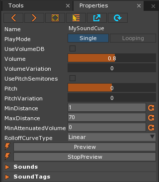
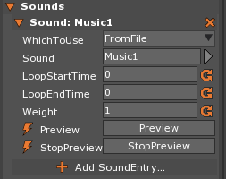
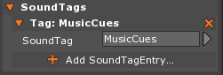

SoundCue
SoundCue is the resource that is used to choose which sound file to play, and allows the user to modify various properties without affecting the original sound. The same Sound can be applied to two or more different SoundCues, have different values set to properties of the SoundCue, and end up sounding completely different. In Zero, a Sound cannot be played directly after it has been imported; it must first be attached to a SoundCue. A SoundCue can accept either a Sound or GeneratedSound resource which is passed into the SoundCue and is then directly called during runtime in order to play the Sound. The SoundCue resource also enables a number of useful properties and methods that grant the user control of how the Sound is heard. Finally, SoundCue has two sub-objects — SoundEntry and SoundTagEntry — that allow the user to pass in the Sound resource to use and to group SoundCues by a common tag so they may be modified as a group, respectively. A single SoundCue can hold multiple SoundEntry and SoundTagEntry sub-objects in order to hold several choices for sounds to play and to be grouped in multiple categories.
Common Uses
- Background Music
- Situational Music
- Positional Audio
- Level-wide and Local Sound Effects (e.g weapons sounds, enemy sounds, etc...)
- Randomized Sounds (randomized sound effects)
Using SoundCues
The following sections will show how a user can add a SoundCue resource, use the properties and methods of SoundCue, and add the SoundCue sub-objects, SoundEntry and SoundTagEntry.
Adding a SoundCue Resource
- Add a new SoundCue resource, like so:

- The new SoundCue should now be open in the Property Window:

The Preview and StopPreview options are only accessible through the Properties window, and will play a preview of the cue with the values as they are set in the property window or stop the preview of the cue, respectively. RolloffCurveType is the curve by which the volume of a sound attenuates as an object with SoundListener moves further and further away. It can be changed to one of six different curve types: Linear, Squared, Sine, SquareRoot, Log and Custom. If Custom is chosen as the RolloffCurveType, a new Property will appear that allows a SampleCurve resource to be used as the Rolloff Curve. The SampleCurve will be normalized and stretched to fit between MinDistance and MaxDistance values:

For further information on how to create a SoundCue resource when importing sound files, see the Importing Sounds Tutorial.
Warning
Do Not Change a Resource During Runtime
In most cases, it is a bad idea to change or alter the properties or behavior of a Resource during runtime. Multiple issues can arise, not the least of which include changing every single instance of that Resource currently in the game. This is not to say that these properties should not be edited while using the Editor; the Editor is exactly the place where Resource properties should be edited.
While the properties and functions in the following Code Reference allow the user to change SoundCue properties and alter SoundCue objects in code (and therefore in game during runtime), they should not be used during runtime as it could cause erratic behaviors. The functions are made accessible for the creation of custom tools or other Editor functionality. To modify a sound that is in use during runtime, it is best to make a SoundInstance.
Properties and Methods of SoundCue
SoundEntry
SoundEntry is a sub-object of SoundCue that allows the user to add any number of Sounds to the SoundCue. When more than one SoundEntry is added to a SoundCue, a random SoundEntry will be chosen when the SoundCue is played. Each SoundEntry will take a Sound resource as a argument and apply certain properties to it, as can be seen here:

The table below enumerates all the properties of the SoundEntry sub-object available to the user in the Properties window as seen above (SoundEntry sub-objects cannot be accessed in code):
| Property | Description |
|---|---|
WhichToUse : WhichSoundType |
From File: allows the user to select a Sound resource in the following property named Sound |
| Generated: allows the user to select a GeneratedSound resource in the following property named GeneratedSound | |
Sound : Sound |
The Sound resource that will be played by the SoundCue |
GeneratedSound : GeneratedSound |
The GeneratedSound resource that will be played by the SoundCue |
LoopStartTime : Real |
If the PlayMode property in SoundCue is set to Looping, this will set the start time (in seconds)
of the looped segment made from the Sound passed in to the SoundEntry. |
LoopEndTime : Real |
If the PlayMode property in SoundCue is set to Looping, this will set the end time (in seconds)
of the looped segment made from the Sound passed in to the SoundEntry. |
Weight : Real |
If more than one SoundEntry is added to the SoundCue, this property will set the weighted randomization value for this particular SoundEntry to be chosen to play. |
| Preview | Previews the property-adjusted Sound passed into the SoundEntry |
| StopPreview | Stops the Preview of the property-adjusted Sound |
SoundTagEntry
SoundTagEntry is a sub-object of SoundCue that allows the user to add any number of SoundTags to the SoundCue. SoundTags can be used to group SoundCues together to be modified as a group through the SoundSpace. Each SoundTagEntry will take a SoundTag resource as an argument, as can be seen here:
